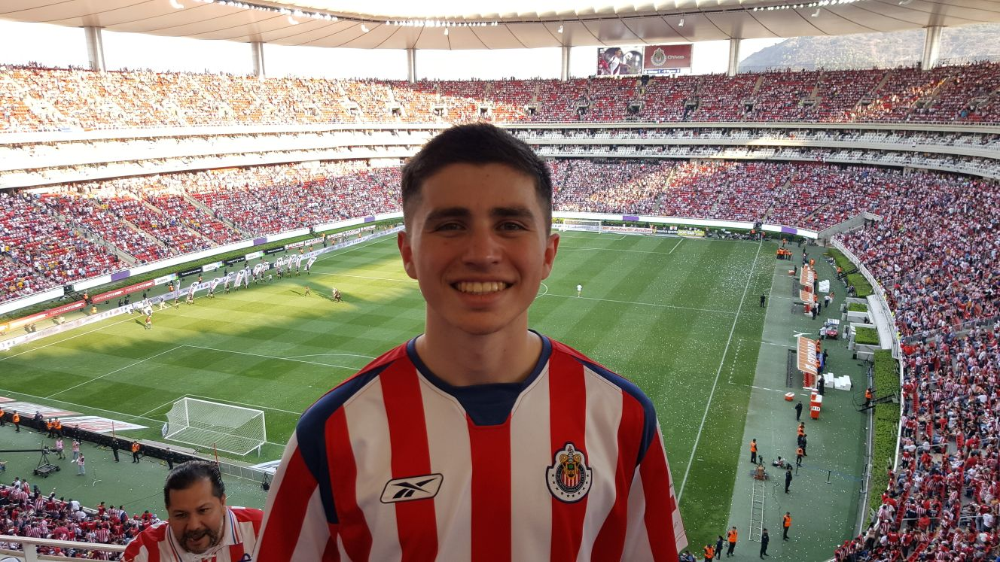
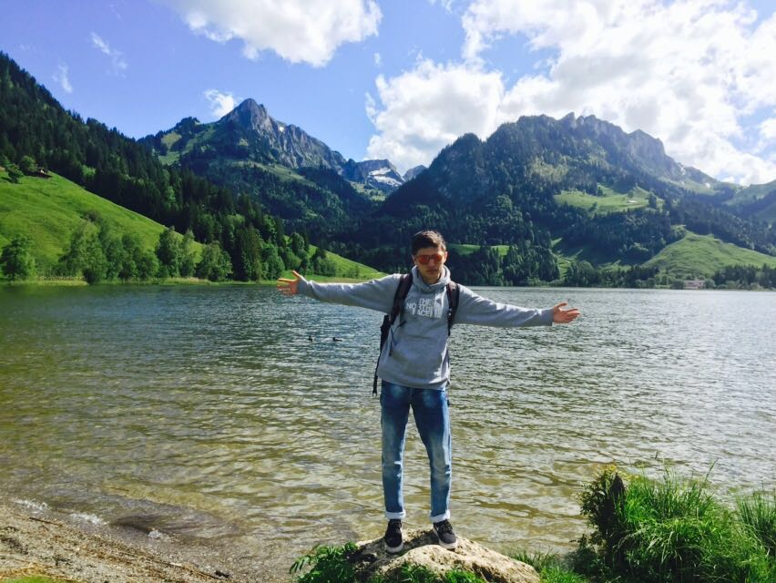
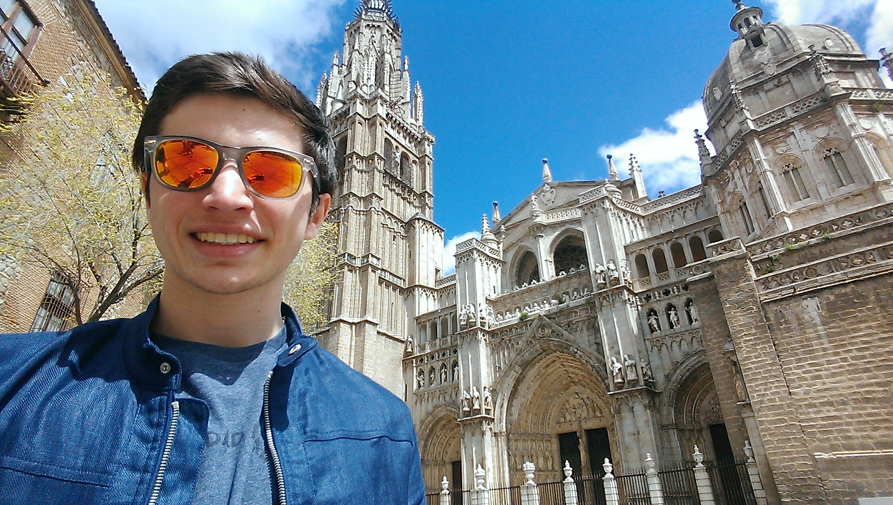
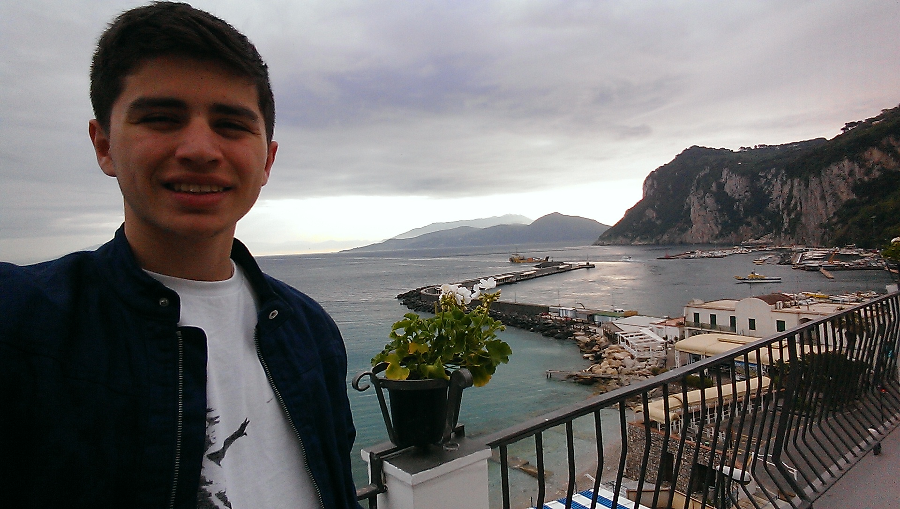

My dad is from Guadalajara, Mexico and all of his family still lives there. Therefore, I get to go to Mexico at least every other year to see them but I try to go every year and they take me to different places such as the beach so I can know different places.

"Guadalajara wins the finals."
Switzerland
During my 2015-2016 school year I went on an exchange program to live in Bern, Switzerland for 11 months. I had the chance to live with two different host families and go to the local school there. I also had to learn German because that was the language they spoke, after my year there I was pretty much fluent in German.

"At Schwarzsea."
Spain
During my exchange in Switzerland I also had the chance to travel all over Europe and Spain was one of the many coutries I traveled to. It was very beautiful with an amazing night life and beautiful beaches.

"In Toledo and a church."
Italy
In Italy I had the chance to go to many differnt cities and even a couple islands of the coast. One of the most amazing and beautiful placces was Rome with all the old buildings around to see.

"On the island of Capri."
France
During my time in Switzerland my first host family took me to Bordeux, France for a week and also to the vineyards around to try differnt wines. Also on my exchange we were able to go on a Euro Tour and one of the places we went to was Paris where we were able to go to the top of the Eiffel Tower.